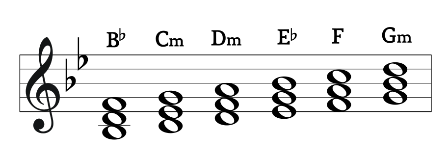

1. 从音阶构建基调和弦
1. 从音阶构建基调和弦
正如前文所述，以下6个和弦构成了乐曲赖以运转的核心骨架——“基调和弦（Prime Chords）”：

然而，这仅仅是 C 大调环境下的基调和弦。在现实中，基调和弦的具体成员是随着调性（Key）的变换而改变的。
那么在其他调性中，基调和弦的成员究竟会如何更迭呢？本篇我们将带大家全面厘清这一规律。
以 A 大调为例
在其他调性中，只要从主音出发依次排列音阶，然后按三度叠置（隔一个音叠一个音）构建三和弦即可。如此便必然能推导出该调的基调和弦。我们首先以 A 大调为例：

带有3个升号的“A 自然大音阶”正是 A 大调的基础。按照“全全半全全全半”的音程梯级推进，F、C、G 三个音都会带上升号（♯）。当然，直接在“”上查阅也是完全没问题的。 在此基础上进行隔音叠置（叠丸子），A 大调的基调和弦便应运而生：

由于 C、F、G 受调号作用带有升号，和弦名称也相应地变为“C♯m”、“F♯m”等。为了照顾尚不熟悉五线谱的初学者，在此特意附上一份将调号升号音高亮标出的谱例：

和弦严格按照“大、小、小、大、大、小”的顺序排列，这是不可动摇的必然规律。无论在哪个自然大调中推导，结果都必然如此。
以 B♭ 大调为例
让我们再来看看带有降号（♭）的调性。B♭ 大调的主音是“B♭（降Si）”，因此：

就是这样。由于 B 和 E 带有降号，因此在和弦代号中“B♭”与“E♭”同样带有降号。
2. 借助五度圈速查基调和弦
然而每次都去数升降号确实有些费时费力。其实，各调的“六大基调和弦”只要看一眼五度圈就能秒懂！

五度圈是我们在准备篇中介绍过的、贯通调性与音阶的神奇罗盘。 你注意到了吗？例如在 A 大调中，找到核心领袖“A”所在的位置，观察它的周围——六大基调和弦整整齐齐地抱团聚集在一起！

没错，五度圈同时兼具着“各调基调和弦花名册”的神奇功能！因此，只需在五度圈上圈出这片区域，然后从领袖出发按音阶字母顺序重新排开，六大基调和弦便立刻齐整列队：
这一规律对世间所有调性全部通用。只要把五度圈打印出来贴在墙上，随时随地都能秒查出任何调的基调和弦！简直完美无瑕。 吉他手借此能秒知和弦代号，键盘手借此能秒知升降号落在何处，电脑编曲（DTM/DAW）打谱同样大受裨益。五度圈真可谓是音乐理论中最不可或缺的秘密武器。
至此，无论面对哪一个调性，我们都已掌握了锁定其核心基础和弦的方法。从下一篇开始，我们将聚焦于每一个基调和弦各自独特的性格色彩展开深度剖析！
总结
- 基调和弦的具体和弦成员随着调性（Key）的改变而动态更迭。
- 查询任意调性下的六大基调和弦，借助五度圈是最为高效神速的途径。
- 自然大调的基调和弦，在任何调性中都必然遵循“大、小、小、大、大、小”的固定属性次序。